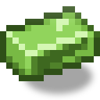

Телепорт
alaindustrial:teleporter
Зведення
Кінець довгої дороги додому. Ставите станцію на базі, носите пульт у кишені — і шахта більше не «далеко». Станція копить EU/FE і платить за стрибок сама; пульт лише обирає, куди.
Стрибок рівно настільки надійний, наскільки заряджена ваша база: повної станції вистачає на 25–50 повернень додому.
Як це працює
- Поставте станцію на базі та підключіть до енергомережі — вона мовчки копить до 500 000 EU/FE.
- Shift-ПКМ пультом по станції — точка додана. Дайте їй ім'я або лишіть «Телепорт 1».
- ПКМ пультом де завгодно — відкривається список, перша точка вже обрана.
- Кнопка «Телепорт» — і ви вдома.
Пульт працює з будь-якої руки й не вимагає цілитися в небо. Клік по каменю, землі чи будь-якому блоку без своєї дії теж відкриває список — у шахті неба немає, а саме там пульт і потрібен. Скриня, верстак і машина при цьому відкриються як зазвичай.
Один пульт пам'ятає до 16 станцій. Прив'язати ту саму станцію двічі не вийде — дубля не буде.
Стрибок
П'ять секунд розминки: навколо вас закручується фіолетова вирва — її бачать і інші гравці, і ви самі від третьої особи, — наростає гул, на останній секунді екран гасне майже до чорного. Потім різко прояснюється: ви вже на місці.
Скасовують стрибок: крок далі ніж на 2 блоки, шкода, смерть, вихід із гри. Скасування безкоштовне — EU/FE списується строго після приземлення. Утекти з бою телепортом не вийде; закінчити копати й поїхати — скільки завгодно. Після стрибка — хвилина перезарядки.
Стрибнути верхи (кінь, човен, вагонетка) не можна — спішіться. Телепорт переносить лише гравця — сам він нікого за собою не тягне.
Що далі буде з улюбленцем, вирішує ваніль, а не мод. Приручений улюбленець, який сидить, стоїть на повідку або на комусь їде, лишається на місці. А от вільно стоячий вовк чи кіт наздожене вас сам: ванільний улюбленець телепортується до господаря, відійшовши від нього далі ніж на 12 блоків. Працює це, лише поки улюбленець у завантаженому чанку — після стрибка через півкарти він просто лишиться вдома.
Скільки коштує
Платить станція-ціль, а не пульт. Ціна росте від відстані і від того, скільки ви тягнете: повний інвентар подвоює рахунок.
ціна = (5000 + відстань × 5) × вага, вага = 1.0 (наліг) … 2.0 (повний інвентар)| Стрибок | Ціна | Стрибків з повної станції |
|---|---|---|
| 100 блоків, наліг | 5 500 EU/FE | ~90 |
| 1 000 блоків, наліг | 10 000 EU/FE | 50 |
| 1 000 блоків, повний інвентар | 20 000 EU/FE | 25 |
| 10 000 блоків, повний інвентар | 110 000 EU/FE | 4 |
Найненажерливіший блок у моді — для порівняння, насос витрачає 1 000 EU/FE на відро. Зате звичайний «стрибок додому» на тлі буфера коштує копійки.
64 землі й 64 алмази важать однаково. Рахується заповненість інвентаря, а не цінність — так зрозуміліше, ніж таблиця ваг на кожен предмет.
Стрибок навмання
Станцію можна проапгрейдити — і тоді вона вміє кидати вас у випадкову точку світу, без жодної другої станції на тому кінці.
Як поставити апгрейд. Скрафтіть чип випадкового стрибка і натисніть Shift + ПКМ по встановленій станції. Чип зникає, станція отримує модуль назавжди. Звичайний ПКМ не підійде — він відкриває екран станції; Shift той самий, що й при прив'язці пульта.
Модуль переживає злам блока (їде на предметі разом із накопиченими EU/FE та приватністю), але дістати чип назад не вийде: один чип — одна станція.
Проапгрейджену станцію видно ззовні. На її гранях загоряються бірюзові кутики — єдиний бірюзовий акцент на фіолетово-графітовому корпусі, тож сплутати ні з чим. Позначка з'являється тієї ж миті, коли чип став на місце, і переїжджає разом із блоком. Відкривати екран, щоб дізнатися, чи станція проапгрейджена, не потрібно.
Як стрибнути. В екрані пульта виберіть станцію та натисніть «Навмання». Платить саме обрана станція — та, у якої має стояти чип.
| Ціна | 50 000 EU/FE, фіксована — видно у підказці до натискання |
| Куди | випадкова точка в кільці 500…5000 блоків від вас |
| Де працює | лише Звичайний світ |
| Розминка / перезарядка | ті самі 5 с і 60 с, що у звичайного стрибка |
Чому ціна фіксована. У звичайного стрибка вона росте від відстані — але тут відстань невідома, доки кості не кинуто. Пласка ціна — єдина, яку можна показати гравцеві до натискання. Вага інвентаря з тієї ж причини не враховується.
Чому лише Звичайний світ. Пошук спирається на висоту поверхні. У Пеклі вона впирається у бедрокову стелю, у Краю між островами порожнеча — «поверхня» там не значить нічого, і чесніше відмовити, ніж вгадувати й кидати гравця в камінь або в безодню.
Приземлення безпечне, або стрибка не буде. Мод шукає місце до 8 разів: не лава, не вода, не кактус, не всередині блока, над головою два вільні блоки. Не знайшов — стрибок скасовується безкоштовно, можна натиснути ще раз. Точка обирається одразу при натисканні (тому відмова приходить миттєво, а не після розминки) і перевіряється наприкінці розминки — якщо за ці п'ять секунд місце зіпсувалося, стрибок скасовується, а не виконується наосліп.
Навмання — дорожче за прицільний стрибок на ту саму відстань (5000 блоків налегке коштували б ~30 000). Це плата за те, що на тому кінці нічого будувати не треба.
Приват
Чужий пульт марний — він прив'язується до того, хто першим його взяв. Вкрадений пульт не приведе злодія на вашу базу.
Станція типово приватна: стрибнути до неї може лише власник. Відкрити її для всіх можна тумблером на її екрані, але спочатку знявши замок поруч — два усвідомлені кліки замість одного випадкового. Після зміни статусу замок закривається сам.
Той самий замок стоїть на кнопці «Видалити» в пульті: видалення точки стирає єдиний запис про те, де дім.
Інтерфейс
Екран станції: смуга заряду, ім'я власника, тумблер Приватна/Спільна під замком. У спільної станції в заголовку — «Телепорт — <нік> (спільна)».
Екран пульта: список точок з іменами й координатами, поле перейменування, «Видалити» (під замком) і «Телепорт». Якщо стрибок не йде — станція розряджена, іде перезарядка, станцію знесли — причина з'являється червоною смугою прямо в екрані й гасне сама.
Енергія
| Поле | Значення |
|---|---|
| Роль | споживач із буфером (лише прийом EU/FE) |
| Буфер (EU/FE) | 500 000 — ×25 від енергосховища |
| Макс. вхід (EU/FE/такт) | 512 (HV) |
| Макс. вихід (EU/FE/такт) | н/з (не віддає) |
| EU/FE/такт | 0 у простої; разове списання при стрибку |
Станція — звичайний HV-споживач, мережа знаходить її сама. У простої не витрачає нічого.
Заряджається хвилинами, а не секундами. HV-інфраструктури в моді поки немає: мідний кабель пропускає 12 EU/FE/такт (його стеля — буфер сегмента, а не напруга тира), тож повний буфер — ~35 хвилин від мідного кабелю або ~26 хвилин від однієї геотермалки. Так і задумано: телепорт — повільно заряджуваний ендгейм.
Властивості блока (станція)
Повний куб, ламається кайлом. При зламі зберігає прапорець приватності та EU/FE-буфер; власник скидається — переставив блок, став господарем. Передня грань енергетично інертна, решта п'ять приймають EU/FE.
Рецепти
Станція й пульт крафтяться окремо. Пульт дешевший — перл Енду + електронна схема + 3 загартовані залізні зливки. Станція без пульта марна, пульт без станції нікуди не веде.
Прогресія
Тир: HV, кластер «Beyond MV». Гейтинг тримається на урані та оці Енду, а не на HV-трансформаторі: його в моді не існує, а посилатися в рецепті на неіснуючий предмет не можна. Розвивається в: міжвимірні стрибки, whitelist-приват, chunk-loader-режим станції.
Чим заряджати
Станція — не машина, а фонд: мережа спочатку годує працюючі машини, а станцію наповнює із залишку. Звідси три різні способи, і вони дають різну швидкість.
| Спосіб | Швидкість | Коли зупиняється |
|---|---|---|
| Генератор через кабель | скільки дає генератор | ніколи, поки генератор працює |
| Накопичувач через кабель | 12 EU/FE/такт | коли донор опустився до половини своєї місткості |
| Накопичувач впритул (без кабелю) | до 32 EU/FE/такт | коли донор порожній |
Через кабель накопичувач віддає станції лише надлишок — те, що вище половини його запасу. Це зроблено навмисно: у станції буфер 500 000 EU/FE проти 20 000 в енергосховища, і без такого порога одна станція викачала б увесь банк бази, лишивши машини без живлення. Якщо хочеться залити станцію цілком поставте енергосховище впритул до неї: пряме прилягання не обмежене ні швидкістю, ні порогом, і це прямий спосіб гравця сказати «віддай усе».
Машини завжди в пріоритеті: поки на тій самій мережі щось працює, станція отримує енергію лише з того, що лишилося.
Пов'язане
Енергосховище — один із трьох способів заряджання, див. «Чим заряджати». Пульт телепорта — обирає ціль, пам'ятає до 16 станцій. Насос — для порівняння за витратою EU/FE.
Крафт
Крафт на верстаку

▶
Телепорт